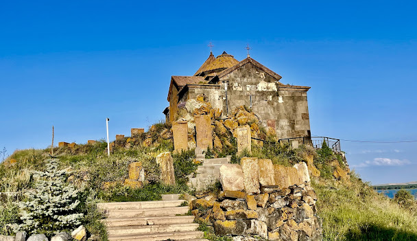
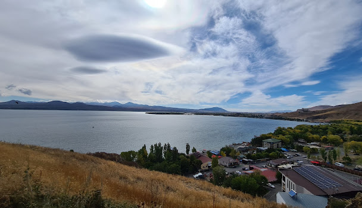
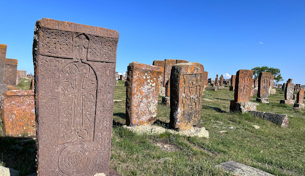

Գեղարքունիք
Գեղարքունիք, մարզի կարգավիճակ ունեցող վարչատարածքային միավոր Հայաստանի արևելքում։ Մասշտաբով երկրի ամենամեծ մարզն է, որտեղ գտնվում է Հայկական լեռնաշխարհի երեք խոշորագույն լճերից մեկը՝ Սևանա լիճը։
Ֆիզիկա-աշխարհագրական բնութագիր
Գեղարքունիքի մարզը սահմանակից է հյուսիսում՝ Տավուշի, արևմուտքում՝ Կոտայքի և Արարատի, հարավում՝ Վայոց ձորի մարզերին, արևելքում՝ Ադրբեջանի Հանրապետության Գետաբեկի, Դաշքեսանի և Թովուզի շրջաններին, հարավ-արևելքում՝ Արցախի Հանրապետության Շահումյանի շրջանին[Ն 1]։ Տարածքի մեծությամբ այն առաջինն է Հայաստանում։
Լեռնագրություն
Գեղարքունիքի մարզը բոլոր կողմերից շրջապատված է լեռնաշղթաներով կամ առանձին լեռներով։ Մարզի տարածքում գտնվող գլխավոր լեռնաշղթաներն են Գեղամա, Արեգունի, Սևանի, Արևելյան Սևանի, Վարդենիսի լեռները։ Բազմաթիվ են հրաբխային կոները, այդ թվում՝ Աժդահակը, Արմաղանը։ Կան նաև դաշտեր, որոնք ընդգրկում են Սևանի ավազանի արգավանդ հողերը։ Դրանցից հատկապես նշանակալի է Մասրիկի դաշտը, որը ծովի մակարդակից բարձր է 1900-2200 մ։
  